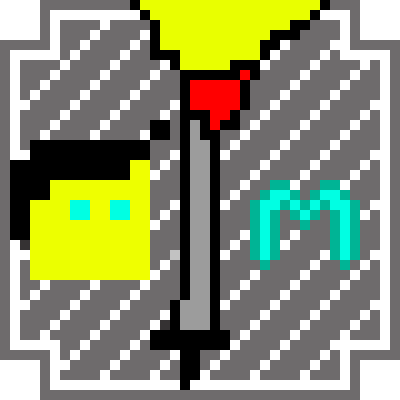
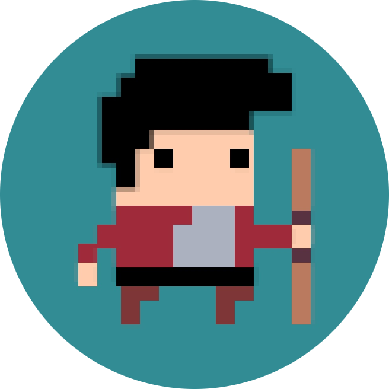
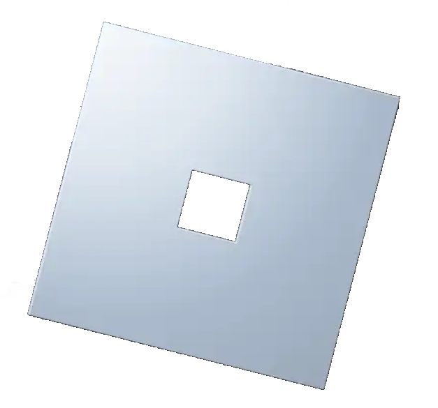

©Julunik.pl
/* PRODUKCJE */
|
{ MULTIWERSALNY RPG } [ 1.0.2 ]
Najnowsza wersja
Free to Play! |
BAZA - Roblox Edition -  > Go To Roblox < |
Survival + Działki |
Julunik
Pseudonim używany w internecie przez Juliana P. (16/06/2006) - Julunik mając 12 lat rozpoczyna swoją zabawę z kultowym językiem programowania "Scratch", bardzo się mu on spodobał. Tworzył za pomocą niego wiele "projektów" które go satysfakcjonowały. Pod koniec 8 klasy podstawowej zaczął ciekawić się również językiem programowania C++. Napisał swój pierwszy "Hello World!". Po szkole podstawowej dostał się na profil Technik Informatyk. Zaczynając technikum rozpoczął hobbistycznie a zarazem intensywnie uczyć się języka C++ coraz bardziej poprzez wszelakie poradniki lub w szkole. Im więcej się on o tym języku uczył tym bardziej go to ciekawiło a pasja się pogłębiała. Julunik bardzo chciał wykorzystać to czego się uczy do tworzenia gier. Tak też zrobił. Właśnie wtedy w między czasie Julunik oficjalnie wydawał na swój profil GameJolt parę różnych swoich projektów i aktualizacji do nich. Tworzył on programy i gry w czystym C++ lub z użyciem bibliotek, używał też programu C++ Builder w którym właśnie powstały jego pierwsze "poważniejsze" gry. Nadszeł jednak moment w którym Julunik postanowił zabrać się za naukę środowiska Unity i języka programowania C# którego ten silnik wymaga. Tak też tworzył w nim swoje pierwsze projekty w których testował jak wszystko działa z pomocą niczego innego jak poradników. W między czasie Julunik zahaczył jeszcze o Roblox Studio i skryptowanie w LUA w tym środowisku. Tworzył on tam swoją grę na platformę Roblox: "Julunik's RPG". Gra ta jednak spotkała się z wieloma błędami czy też problemami z wydajnością (np. lagami serwera) i wymagana była przynajmniej jakaś optymalizacja. Julunik postanowił jednak odejść od tej gry na Roblox zostawiając ją tak jak jest. W Unity natomiast Julunik swój pierwszy oficjalny projekt nazwał "MININGED" - prosta gra polegająca na zbieraniu surowców "na ślepo" i ulepszaniu różnych rzeczy itp. "MININGED" posiadał swój nietypowy styl/mechaniki co wyróżniało projekt na tyle że tak jakby ciężko jest go skategoryzować. "MININGED" publicznie istnieje do dziś jednak póki co jest porzucony i poza tym NIE DOKOŃCZONY. Wszystko dlatego że Julunik postanowił ostatecznie stworzyć w Unity coś co rozwija do teraz: "MULTIWERSALNY RPG". Pobocznie Julunik założył też serwer Minecraft Survival + Działki ponieważ z racji iż niejaki FullerBread2032 użyczył mu pewnego miejsca na serwerze do hostingu... to czemu by nie? Co więcej, Julunik założył serwer Minecraft również z powodu iż chce sobie czasem pograć w zwyczajny Minecraft survival + działki w jego stylu, u siebie na serwerze, i ewentualnie jeszcze wraz z znajomymi którym serwer też przypadł by do gustu (singleplayer mu nie starczał, chciał spróbować czegoś więcej). Tak oto zakupił domenę "Julunik.pl" i pierwsze do czego była ona użyta to właśnie do tego serwera Minecraft. Potem Julunik zapoznał się również i trochę z html, css, i js. Założył więc konto na GitHub, napisał tą stronę, opublikował ją tutaj, połączył z domeną "Julunik.pl" - tutaj również pomógł FullerBread2032 z swoim serwerem - i prezentuje się to tak jak widać... Niedawno powstała również NOWA GRA na Roblox od Julunika: "BAZA - Roblox Edition". Jest to odświeżenie / REMAKE gry 2D zwanej "BAZA" od JulunikStudios która została wydana jedynie na windows i powstała właśnie w programie C++ Builer. Została ona opuszczona z róznych względów (np. lagi gry, słaba optymalizacja, czy chęć na tamten moment uczenia się Unity) ale powróciła w całkowicie odświeżonej wersji na Roblox!